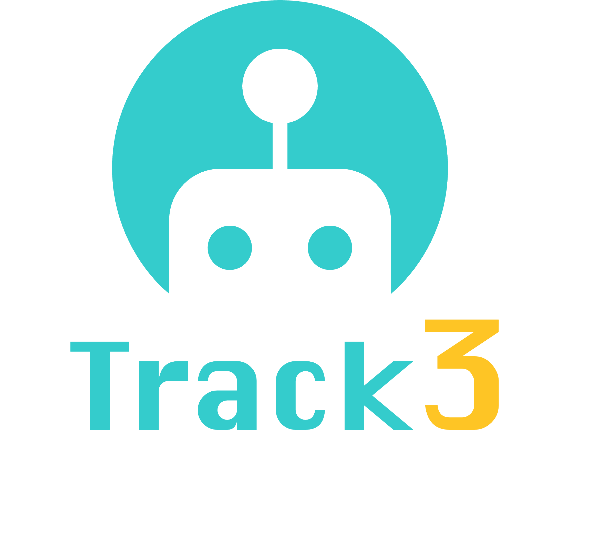
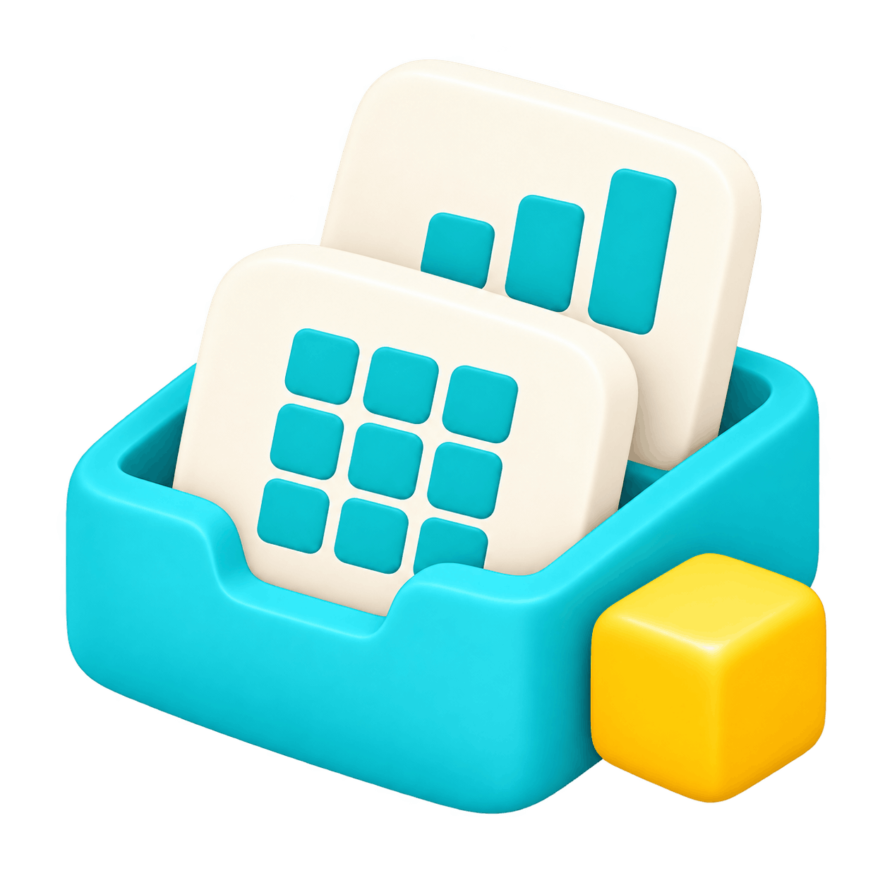

RoboWorld Challenge 2026 · Track #3
SafeDrive-VLA
Towards Safety in Autonomous Driving
Language-guided driving that follows safe instructions and responds safely to instruction-scene conflicts.

Track #3- Benchmark
- CARLA-F / B2D-C
- Setting
- Closed-loop driving in CARLA
- Metrics
- NCR, speed error; DS, SR, infractions
Introduction
Participants develop vision-language-action models (VLAs) that drive safely under natural-language navigation instructions. Given onboard camera observations and a stream of instructions, agents drive closed-loop in CARLA and output driving trajectories or control actions.
Agents must follow safe instructions, such as turns, lane changes and target speeds. When an instruction conflicts with the traffic scene, they must respond safely by slowing down, waiting or choosing a safe alternative. The same instruction can be safe in one scene and unsafe in another, so the agent must judge it against what it sees.
End-to-end policies, VLA models, world-model approaches and reinforcement learning are all welcome.
Registration
Register Your Team (Google Form)Submission
Participants run their agent on the track routes in CARLA and upload one ZIP archive with the leaderboard record and the per-tick ego state of every route; the server computes the scores. The track toolkit provides the routes, the getting-started guide and the packing script. Each team may submit up to three times per day, and the leaderboard keeps the best Score.
Submission Portal (CodaBench Server)Dataset & Evaluation Setting
Evaluation uses 80 public closed-loop routes from the SafeDriveVLA benchmarks, released in the track toolkit. The baseline is trained on the CARLA driving dataset of SimLingo, collected by the PDM-Lite expert.
| Split / Test Set | Size | Details |
|---|---|---|
| Training | 3.3M frames | SimLingo CARLA dataset with instruction-following annotations |
| CARLA-F | 40 routes | Safe instruction following; no background traffic, all lights green |
| B2D-C | 40 routes | Unsafe instructions issued at the safety-critical events of Bench2Drive scenarios |
Navigation Signal Rule
- Language only. The active language instruction is the model's only navigation signal; modules may use information parsed from the instruction text.
- No route-planner information. Route-planner commands, target waypoints and the route must not reach any part of the model.
- Reproduction. Compliance is checked when the results of the top teams are reproduced.
Evaluation
CARLA-F evaluates safe instruction following; B2D-C evaluates safe responses to instructions that conflict with the scene. All metrics are computed by the server from the submitted per-route files.
| Metric | Preferred Direction | Definition |
|---|---|---|
| CARLA-F: Navigation Compliance Rate (NCR) | Higher | Share of turn, go-straight, lane-change and lane-follow instructions executed (%). |
| CARLA-F: Speed Error (SE) | Lower | Deviation from the instructed target speed (m/s). |
| B2D-C: Driving Score (DS) | Higher | Bench2Drive route completion times infraction penalty. |
| B2D-C: Success Rate (SR) | Higher | Routes completed without infractions. |
| B2D-C: collisions, traffic violations, out of route | Lower | Total counts over the 40 routes. |
Composite Score
Submissions are ranked by the following Score, with higher scores indicating better performance:
NCR is averaged over all CARLA-F instructions (%), DS is the B2D-C Driving Score, and SE is the CARLA-F Speed Error (m/s). A missing or invalid route counts as failed.
Reference Baselines

SafeDriveVLA emits a driving mode (strict, cautious or fallback) before its actions, and reads the future predicted by a frozen latent world model under the instructed maneuver before it commits.

Results of the released checkpoint on the 80 track routes are shown below; these are baseline results, not competition submissions.
| Baseline | Score | CARLA-F NCR | CARLA-F SE | B2D-C DS | B2D-C SR |
|---|---|---|---|---|---|
| SafeDriveVLA | 56.90 | 57.75% | 5.24 | 66.55 | 20.0% |
Track Organizer
Contact
For challenge questions, contact roboworld2026@gmail.com.